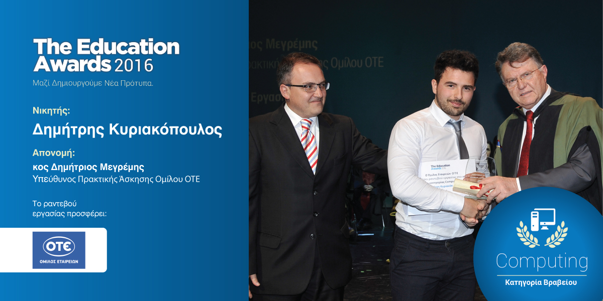
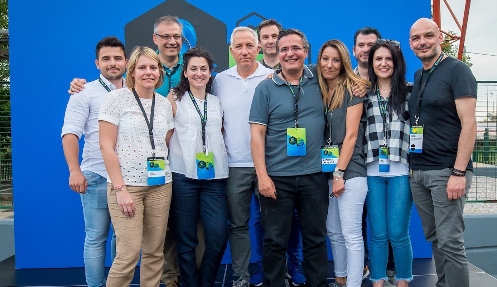
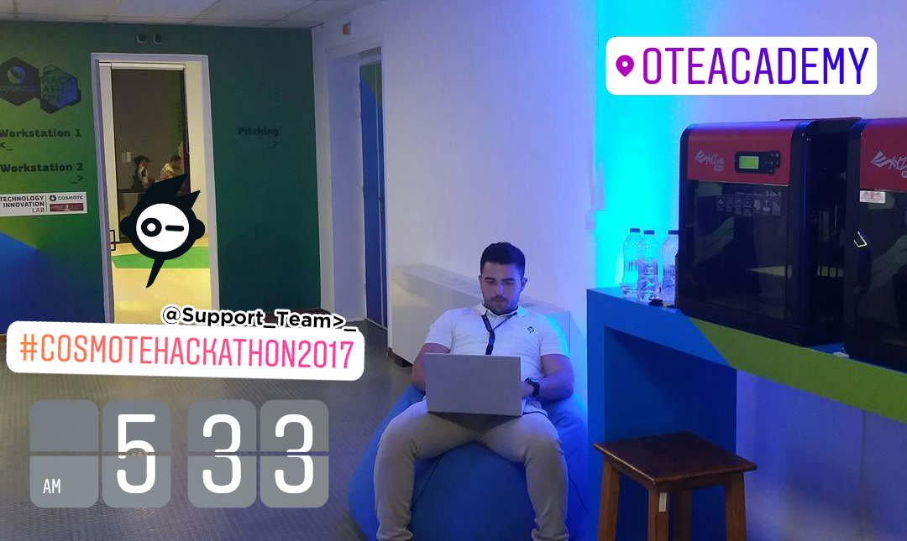
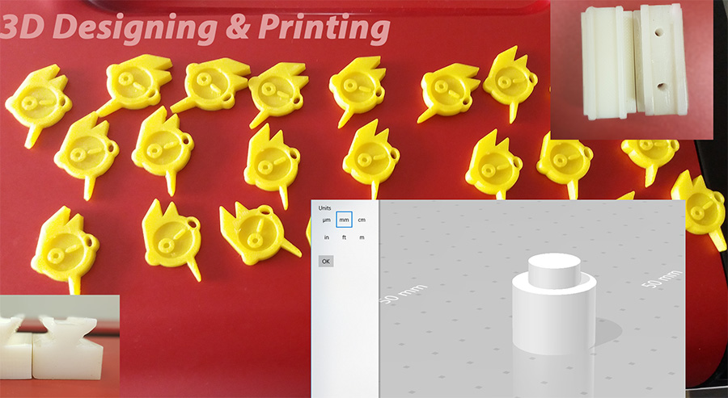
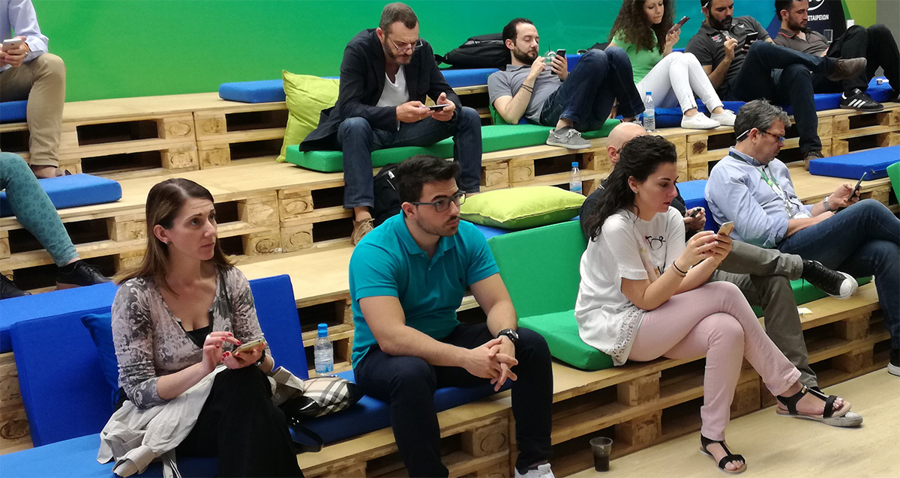
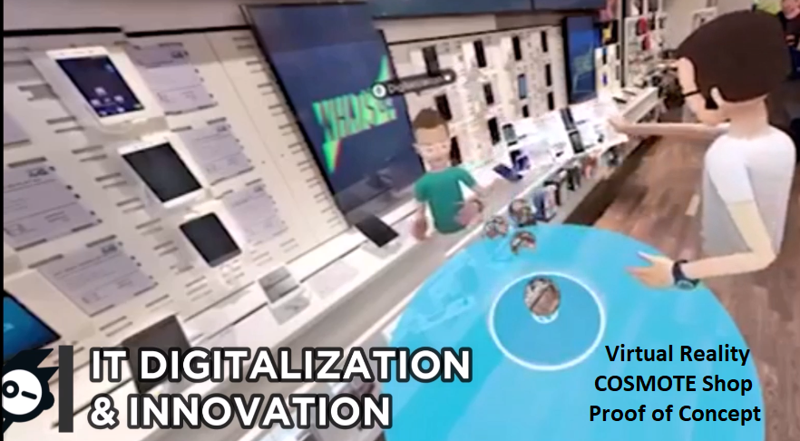
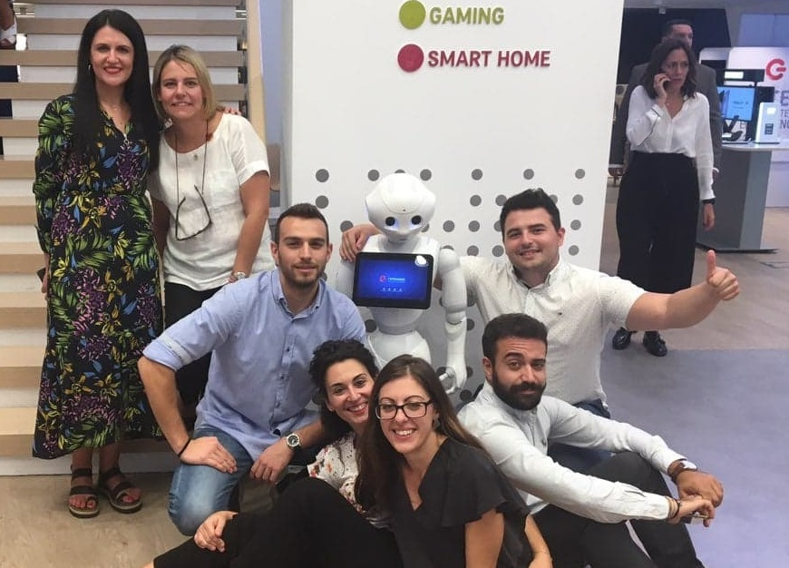
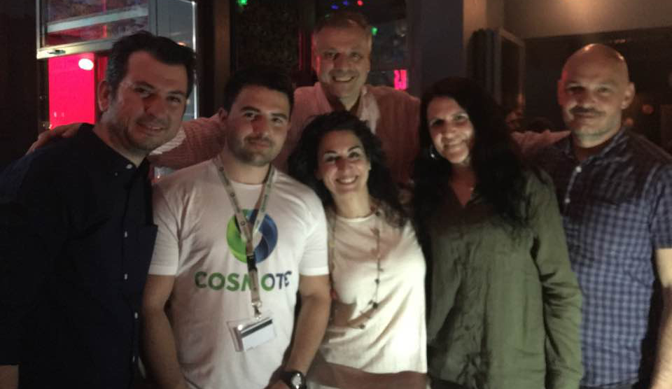

Έχοντας διακριθεί στα Education Awards 2016 στη κατηγορία Computing, κατάφερε να φτάσει το βιογραφικό μου σημείωμα στον Όμιλο ΟΤΕ με αποτέλεσμα να διεκδικήσω ένα ραντεβού εργασίας και να μου πρότεινουν να προγραμματίσουμε μία συνέντευξη.
1η Μαρτίου 2017 λοιπόν αντί να προτιμήσω ένα skype call για το interview, ταξίδεψα Αθήνα ώστε να τους δω και να με δουν από κοντά, και να τους δείξω ταυτόχρονα με αυτή μου την ενέργεια πόσο πολύ το ήθελα.

Και κάπως έτσι, όλα άρχισαν!
Από Δευτέρα 3 Απριλίου 2017 ξεκίνησε το ταξίδι μου στην Ομάδα IT Digitalization & Innovation του Ομίλου ΟΤΕ.

Βασικός στόχος της ομάδας ήταν να αποτελέσει το "καταλύτη" της καινοτομίας και του ψηφιακού μετασχηματισμού εντός του Ομίλου ΟΤΕ.
Οι δράσεις μας περιλάμβαναν :
Δημιουργία δράσεων καινοτομίας (π.χ. Hackathons) τόσο για το εξωτερικό περιβάλλον όσο και για το εσωτερικό (τους εργαζομένους) του Ομίλου.
Διοργάνωση workshops με όλα τα BUs με στόχο τη δημιουργία μέσω του Collaboration ενός Digital Roadmap για καθένα από αυτά, έχοντας το digital transformation ως όχημα.
Ανάπτυξη Prototypes με τη χρήση και το συνδυασμό νέων τεχνολογιών (3D Printing, Augmented Reality, Virtual Reality, Internet of Things, Machine Learning, Artificial Intelligence etc) με στόχο την εξέταση και τη δυνητική δημιουργία νέων προϊόντων και υπηρεσιών.
Να αποτελέσουμε τη γέφυρα μεταξύ του Ομίλου και του οικοσυστήματος καινοτομίας (π.χ. StartUps, Incubators etc.).

Αναφορικά με το ρόλο μου στην ομάδα, επικεντρώθηκε στο #development όταν αυτό χρειαζόταν αλλά σε καμία περίπτωση δεν περιορίστηκε αυτό :
Συνεισφορά στην ανάπτυξη του mobile app του 1ου COSMOTE Hackathon (2017), για το οποίο ανέλαβα και το deployment στο Playstore της Google και το Appstore της Apple.
Δημιουργία ειδικών web responsive digital invitations, για τα events-workshops που διοργανώναμε, τα οποία γνώρισαν μεγάλη αποδοχή από το κοινό..
Ανάπτυξη διαδικτυακής πλατφόρμας από το 0 για τη διεξαγωγή των COSMOTE Awards (2017), για την οποία στη συνέχεια ανέλαβα τη παρακολούθηση και δημιουργία στατιστικών και analytics.
Ανάπτυξη in-house από το 0 και end-to-end Responsive διαδικτυακής πλατφόρμας και μηχανισμών για τη διεξαγωγή του 1ου Internal Cosmote Hackathon. Γεγονός το οποίο μας έδωσε τη δυνατότητα να εργαστούμε agile ώστε να προσαρμόζουμε διαρκώς τη πλατφόρμα ανάλογα με το feedback του κόσμου με τέτοιο τρόπο ώστε να ανταποκρίνεται όσο το δυνατόν καλύτερα στις ανάγκες του.
Προγραμματισμός Robot ώστε να υποστηρίζει και να αλληλεπιδρά στην ελληνική γλώσσα παράλληλα με τη δημιουργία σεναρίων εξυπηρέτησης του πελάτη μέσα από ένα κατάστημα.
Την τεχνική υποστήριξη στα events που διοργανώναμε.
..και πολλά ακόμη, τα οποία μόλις απολυθώ από το στρατό και έχω χρόνο θα προσθέσω στη λίστα :-) .


----Παραδείγματα κάποιων Prototypes που δημιουργήσαμε και εξετάσαμε (και τα οποία έχουν δει το φως της δημοσιότητας):----
COSMOTE Virtual Reality Shop

IoT Door with Voice Command
Dinno The Robot


*****Πάντα branded, τόσο εντός όσο και εκτός εργασιακού περιβάλλοντος!*****